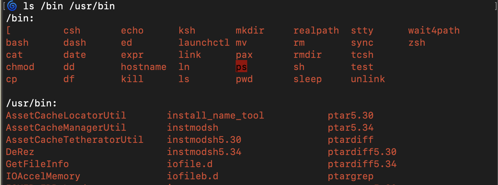

---
tags:
- zsh
- pipe
- pipeline
- linux
- command_cut
- command_column
- command_grep
- history_substitution_operator
- standard_error
- redirection
---

Above is the partial output of the command `$ ls /bin /usr/bin`. These are the binary executables in the file system.
Say, we wanted to remove the white text.
`$ ls /bin /usr/bin |grep -v '/bin:$'`
**Aside**, `:` (colon) is a literal colon and is not a meta-character.
The `-v` or `--invert-match` means, everything that does not match the grep string will be printed to standard out.
```shell
$ ls /bin /usr/bin |grep -v '/bin:$'
[
bash
cat
chmod
cp
csh
dash
date
...
test
unlink
wait4path
zsh
...
AssetCacheLocatorUtil
AssetCacheManagerUtil
AssetCacheTetheratorUtil
DeRez
GetFileInfo
IOAccelMemory
IOMFB_FDR_Loader
IOSDebug
ResMerger
...
```
The above snippet is partial output from the command. Notice the ellipsis. The pesky newline after the `zsh` line is apart of the real output. Lets remove that line by a new pipe and a `grep`
`$ ls /bin /usr/bin |grep -v '/bin:$'|grep -v '^$'`
Understanding the regex: `'^$'`
`^` starting at the beginning of the line then match _nothing_ til the end of the line `$`. In tandem with the `-v` option this will output all the lines that do not match a blank line.
###### `column`_ize_ the output
given `proglist`, a file of the all the available commands defined as...
`$ /bin/ls /bin /usr/bin | grep -v '/bin:$' | grep -v '^$' | sort > proglist`
`$ cat proglist`
```
AssetCacheLocatorUtil
AssetCacheManagerUtil
AssetCacheTetheratorUtil
DeRez
GetFileInfo
IOAccelMemory
IOMFB_FDR_Loader
IOSDebug
ResMerger
...
```
The above is partial output. Notice the ellipsis.
`$ column proglist`
when given with no options will pick how many columns based off the current terminal size (the width of the window).
`$ column -c 50 proglist`
the `-c` option will output columns based on the hardcoded specifications of a terminal window being 50 columns wide.
###### `cut`ing off excess characters
`$ head proglist | cut -c 1-7`
__Aside__, `head` outputs the first ten lines. Then, `cut` based off characters (`-c`). The above command outputs the first 7 characters of each line.
**Oops** I mean to get the fist 9 characters, not 7. Perfect time for the **history substitution operator** `^n^n`
`$ ^7^9`
###### Get all programs (lines) that end in 'sh'
`$ grep 'sh$' proglist`
```
afhash
bash
chsh
crlrefresh
csh
dash
hash
instmodsh
ksh
mcxrefresh
power_report.sh
sh
ssh
```
Modify the above command so that the commands that end in '.sh' are omitted. Good use case for `egrep` that accepts extended regular expressions. `grep -E` is the same as `egrep`.
`$ egrep '[^.]sh$' proglist`
###### Conditional or in egrep's regex
`$ egrep '[^.]sh$|ch$' proglist`
The above command shows the regex or conditional which happens to be a pipe as well! A conditional and is achieved by separating out the conditions in different passes of the `grep` command. Yes, multiple pipelines of `grep` are necessary to achieve this.
###### `ls` (list) the contents of each directory in the `PATH`
Given, the below command will outputs the paths in an arguments friendly way.
`$ echo ${PATH}|tr ':' ' '`
**translate** the characters from standard input. Specifically, for replace every colon with a space. Then with **command substitution** we put the standard output of the command on the command line as arguments (not through pipes as standard input). **Command substitution** is done with backticks. Think of it as an in-place substitution.
```shell
$ ls `echo ${PATH}|tr ':' ' '`
```
###### Alternative with loops
See more in [[Loops]]
```shell
for dir in `echo ${PATH}|tr ':' ' '`
do
ls $dir
done
```
###### Got errors?
Redirect to the standard error to the 'waste bin' (`/dev/null`)
Direct the '2' stream (file descriptor) to standard error. Modify the `ls` line with the below.
`ls $dir 2> /dev/null`
###### More robust script will only call `ls` on directories
A simple check (`test`) before the call to `ls` will suffice.
The above for loop naively calls `ls` on everything in the `PATH`. Lets make sure the for variable is a directory before calling `ls`
```shell
for dir in `echo ${PATH}|tr ':' ' '`
do
if [ -d $dir ]
then
ls $dir
fi
done
```